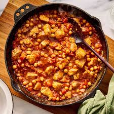
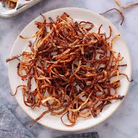
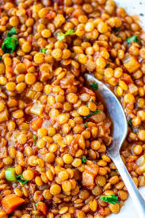
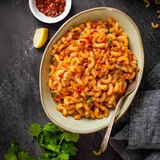
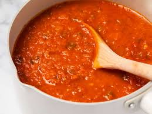
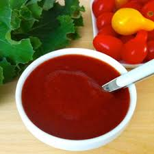
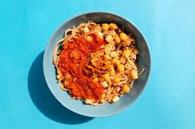
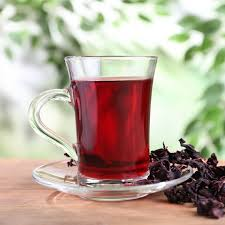

Chickpeas, a side plat to have.
ratings:★★★

crispy fried Onoins, a topping for koshary
ratings:★★★★★

lentils,a side plate ot have.
ratings:★★★

Rice, a side plat to have.
ratings:★★★★★

you could have a diffrent meal instead of always eating koshary.
ratings:★★★★

an tomato Souse to add it on koshary.
ratings:★★★★

chili sauce,to spice up meals.
ratings:★★★

A plat of vegans to have with your chosen meals.
ratings:★★★★

Koshar plates & sizes: Size options:Small,Medium,large Includes: sauce on the side, optional chili. Best for: light lunch or snack.
ratings:★★★★★

you could have a cup of karkade after having your meals.
ratings:★★★★★